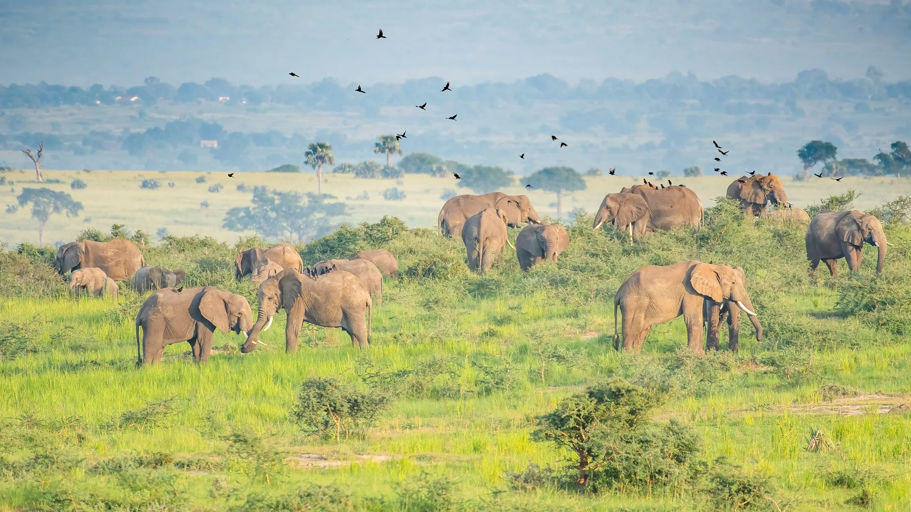

Uganda earns the name "Pearl of Africa" not because it is polished into one perfect image, but because it contains extraordinary
variety in a surprisingly compact space. A traveler can move from gorilla forest to savannah, from crater lakes to city hills, from
roaring water to quiet island mornings, and still feel that the journey belongs to one coherent country.
That variety is not only scenic. Uganda also carries an unusually welcoming travel mood. Encounters with people often feel warm and
direct, not overly scripted. The landscapes are dramatic, but they are still inhabited, cultivated, sung through, driven across, and
lived with. That human presence adds depth to the beauty.
The nickname makes most sense when you stop expecting a single defining attraction and start noticing how many different forms of
richness Uganda holds at once.
Landscape Diversity Is The First Surprise
Many first-time visitors arrive with one dominant image in mind, often gorillas or safari. They leave talking about contrast. Uganda's
forests feel ancient and enclosing. Its savannah parks feel spacious and sunlit. Lakes soften the journey. Mountains sharpen it.
The result is a country that keeps changing emotional register from region to region.
This matters because travel becomes more memorable when places do not blur together. In Uganda, one stop often heightens the next by
being completely different in mood.
Wildlife Is Only Part Of The Story
Uganda absolutely deserves its wildlife reputation. Gorilla trekking, chimpanzee tracking, game drives, boat safaris, and birding all
contribute to its appeal. But the country's charm deepens when visitors also pay attention to cultural performances, roadside life,
local food, historical sites, and the feel of each region beyond the formal attraction list.
That broader experience is what turns admiration into affection. Uganda does not only impress people. It often makes them feel unexpectedly attached.
The Climate Of The Journey Matters Too
Uganda's beauty is also tied to its livability. The climate, especially in many highland and lake areas, often makes travel feel gentler
than visitors anticipated. Greenery lasts. Light can be soft and luminous. Even demanding travel days are often balanced by places that
invite restoration.
This is one reason the country feels so rounded. It does not overwhelm with only one kind of intensity. It gives adventure, but it also
gives rest, human connection, and scenic release.
Why The Name Endures
A nickname survives when it continues to feel earned. Uganda still earns "Pearl of Africa" because visitors keep discovering how many
kinds of beauty can coexist there without canceling one another out.
For readers planning their first trip, the phrase should be taken less as hype and more as a clue. Uganda's greatness lies in combination:
a country of many textures, many moods, and a rare ability to make travelers feel they have seen far more than they expected.